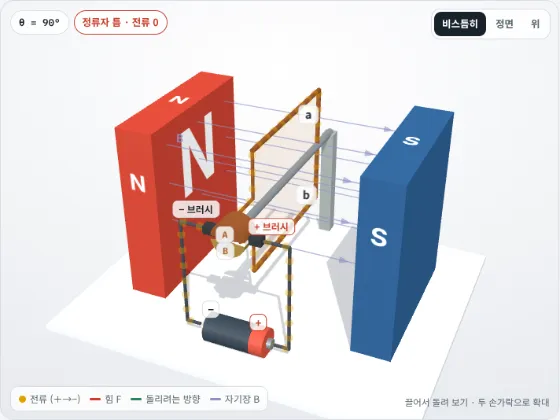
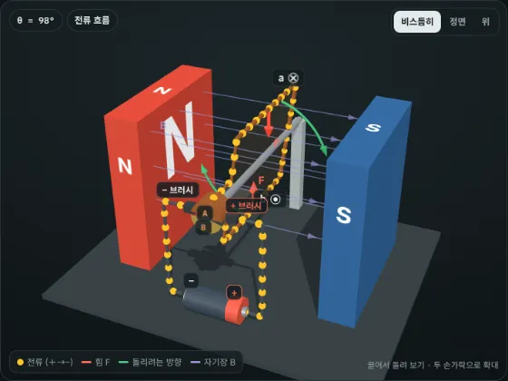

II2-01준비 중
자기장과 자기력선
눈에 보이지 않는 자기장을 어떻게 그리고, 그 그림에서 무엇을 읽어 낼까?
II2-02준비 중
직선 전류에 의한 자기장
직선 도선 둘레의 자기장은 어떤 모양이고, 방향과 세기는 어떻게 정할까?
II2-03준비 중
원형 전류와 솔레노이드의 자기장
도선을 둥글게 감으면 자기장이 어떻게 모이고, 솔레노이드는 왜 막대자석처럼 행동할까?
II2-04준비 중
자기장 중첩 계산법
여러 도선이 함께 만드는 자기장은 어떻게 더하고, 자기장이 0인 점은 어디에 생길까?
II2-05준비 중
전자석과 전류의 자기 작용 이용
코일에 철심을 넣으면 왜 훨씬 센 자석이 되고, 이것은 어디에 쓰일까?
-


II2-06원리 애니메이션
자기장 속 전류가 받는 힘과 전동기
자기장 속 도선은 왜 힘을 받고, 그 힘으로 전동기는 어떻게 한 방향으로 계속 돌까?
II2-07준비 중
물질의 자성: 원인과 세 종류
물질은 왜 자석에 끌리거나 밀리고, 어떤 물질은 자석이 된 채로 남을까?
II2-08준비 중
자성체 판별 실험 해석(저울·용수철·낙하)
저울·용수철·낙하 실험의 결과만 보고 물체의 자성을 어떻게 판별할까?
II2-09준비 중
자성체의 이용
정보 저장, 고무 자석, 자기 부상 같은 이용에는 각각 어떤 자성이 필요할까?
II2-10준비 중
자기 선속과 패러데이 전자기 유도 법칙
자기장이 '있는 것'만으로는 전류가 생기지 않는다. 무엇이 변해야 전류가 흐를까?
II2-11준비 중
렌츠 법칙과 에너지 보존
유도 전류는 왜 하필 그 방향으로 흐르고, 그 방향을 어떻게 빠르게 정할까?
II2-12준비 중
자기장 영역을 지나는 고리: 기전력 BLv와 Φ(x) 그래프
고리가 자기장 영역을 지나갈 때 전류는 언제, 어느 방향으로, 얼마나 흐를까?
II2-13준비 중
전자기 유도의 이용
주변 장치들 중 무엇이 전자기 유도이고, 무엇이 전류의 자기 작용일까?